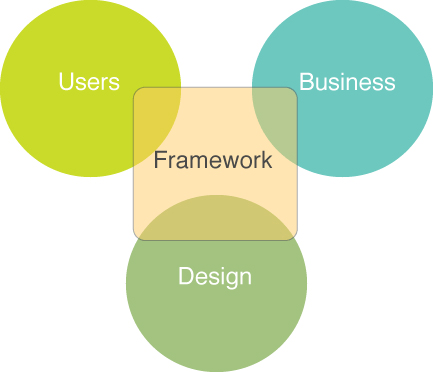

Framework é um conjunto de técnicas, ferramentas ou conceitos pré-definidos usados para resolver um problema de um projeto ou domínio específico. É, basicamente, uma estrutura de trabalho que atua com funções pré-estabelecidas que se adaptam à situação e à organização em questão. Esse conjunto de práticas podem ser, por exemplo: a aplicação de um canvas, um business plan, a matriz SWAT, o OKR (Objective and Key Results), o ROADMAP, etc, que são muito úteis para definir estratégias iniciais de uma organização. Outro tipo de framework é a implantação de um sistema de gestão de riscos ou de qualidade, por exemplo, que envolve pessoas de vários segmentos da organização. Também existem frameworks no mundo dos Softwares, que são conjuntos de aplicações dentro de um projeto que interagem entre si e com isso se alcança resultados como uma determinada função de um programa.
Especialistas da área da administração afirmam que um dos principais problemas na área é a falta de frameworks. Falta uma estrutura única de gestão de riscos para que todos os setores de uma organização consigam usar. Normalmente, cada departamento usa suas próprias políticas e metodologias e é preciso mudar isso para se obter melhores resultados. E como melhores resultados, entende-se como resultados que integrem os departamentos e pessoas da organização. Também é necessária a integração de metodologias, disciplinas e técnicas para a aplicação eficiente de um framework na gestão de riscos. “A identificação dos riscos deve ser feita por todas as áreas da organização que repassam aos líderes as informações consolidadas, seja por meio de matriz de risco ou outra ferramenta, mas que sejam informações de qualidade”, afirma Antonio Celso Brasiliano, professor e doutor em Ciência e Engenharia da Informação e Inteligência Estratégica, pela Universidade de Paris. Gestão de risco eficiente é aquela que possui framework, aponta o professor.
A partir do entendimento de que uma organização é um conjunto de processos, entendemos que é possível e necessário utilizar ferramentas que melhorem o desempenho desses processos. Ao aperfeiçoar as etapas dos processos, são entregues melhores resultados. A padronização é necessária e útil para muitos âmbitos e sistemas. Os frameworks certamente contribuem para o alinhamento e melhoria de diferentes partes dos incontáveis processos e elementos dentro de uma organização, desde o início até o fim dos ciclos que a movimentam diariamente.
em: 26/08/2019
por Priscila D'Avillar
Link: https://dinamicatreinamentos.com/blog/o-que-sao-frameworks/